Using Query Results
Once a query has found something useful in your documents, you may wish to turn it into a lens, which annotates its hits whenever you are viewing a document. Queries may also be saved as a custom analyzer that operates during indexing. Should a query be able to locate documents within your project, it can become a smart set. The Actions menu allows you to perform actions directly on your results (coding passages, gathering the documents into a set, bookmarking hits, freezing a word list, and adding words to a dictionary, among others).
The current chapter requires familiarity with building and running queries; Chapter 15, Building a Query and Chapter 16, Query Results and Statistics cover these topics. Examples will refer to “Climate Debate”, the example project, which is added to your library via File ▸ Import ▸ Example Project. Included in “Climate Debate” are two saved queries, titled “Urgency Talk” and “Keywords: Activists”. All other queries mentioned within this chapter can be constructed from the descriptions provided below.
Concepts and key terms
In this chapter, a passage refers to any span of text found by a query. Passages include words, sentences, codings, and speaker turns.
A query lens refers to a saved query that also shows up in the lens menu in the reader (see Chapter 6, Lenses). Once you enable it, LemmaLoom executes the query on your current document and annotates the hits according to your configuration. This happens similarly to how the built-in lenses highlight word classes and negations. If you edit a saved query and save it, its lens updates automatically too.
A generated analyzer is a custom analyzer that is created based on a query. This analyzer uses JavaScript that LemmaLoom generates for it, similar to the scripts you develop in Window ▸ Analyzers. This analyzer runs automatically in all projects during indexing (see Chapter 21, Analysis and Indexing). Findings of analyzers are the spans of text they annotate, stored with each document they are run on. A generated analyzer is essentially a snapshot of a query in time.
The parity check runs both a query and a generated analyzer side-by-side and compares their results on a few documents. A generated analyzer can be saved only if both find exactly the same passages.
A linked analyzer is a generated analyzer that retains knowledge of the saved query it comes from. Whenever you change and save the query afterwards, the analyzer shows Out of Date.
A frozen list refers to a static list of words extracted from a Collocates or Keywords query. Collocates come with scores (i.e., association values), while keywords get their log-likelihood. These scores become weights assigned to each element of the frozen list. A query can search for the words of a frozen list in any scope.
Lens, analyzer, or smart set
Typically, one would test out a query on several documents until getting a result satisfactory enough to warrant keeping. The purpose behind the particular query affects how one stores it. Usually, the best place to begin is with lenses because they show hits in real-time while reading, picking up saved changes along the way. Lenses are appropriate for patterns one wishes to continue refining, as well as for viewing patterns within close reading sessions.
Analyzers are more suited toward finalized patterns, since they apply in every project and store results within each document. Such stored results become accessible through other queries, which may involve counting results, comparing between document groups, or correlating hits with codes. Analyzers can only use words, sentences, and grammatical structures, but once they’ve been created based off of one version of a query, they keep that version until you update them.
Smart sets represent a third option for storing a query pattern. In this case, queries select documents based off of certain attributes and characteristics rather than content patterns. As such, a smart set could contain the activist texts with large audiences, for example. A smart set appears in the navigation sidebar and can be used like any other set.
The three options differ in scope of application and adherence to query changes:
| Query lens | Generated analyzer | Smart set | |
|---|---|---|---|
| Made from | a query that lists passages | a query that lists passages and looks only at words, sentences, and their grammar | a query that lists documents by their properties |
| What you get | colors and a legend in the reader | colors in the reader, plus stored findings that other queries can search | a set in the sidebar whose members are worked out from its conditions |
| Where it applies | wherever the saved query is available (one document, a set, a project, or all projects) | every document in its languages, in all projects | its project |
| When the work is done | each time you enable the lens in a document | once per document, during indexing | whenever the set is used |
| After you change the query | follows the saved query | shows Out of Date until you update it | keeps its own copy of the conditions |
Unlike these three, the Actions menu operates on your results once, creating sets, bookmarks, and codings based on the results. From there, they become independent of your query.
Where the Save and Actions menus are located
Each query has a header row above the query builder. This header appears no matter where you work with the query (the Query facet of a document, Queries views within sets and the project itself, or the standalone Queries window). The commands discussed here appear in two of its menus. Save (the icon showing a square with an arrow pointing into it) is used to save queries and turn them into lenses or analyzers. Actions (the ellipsis circle icon ⋯) acts upon the results the query has just produced. Both commands move to a second line when the first line cannot fit all of its buttons, placing themselves at the right end of that second line. Otherwise they sit to the right of Run Query (the triangle button). The remaining parts of the header are explained in The builder in Chapter 15, Building a Query.
The Save menu contains options such as Save, Save As…, and, for queries already saved, Rename…. Further down the menu, a dividing line precedes Save as Lens… (or Remove Lens for queries that are already lenses) and Save as Analyzer…. Additionally, the Delete Query option appears below it when the query is already saved. Finally, the Delete Query action appears directly in the shortcut menu of saved queries in the left column of Queries views and the Queries window. When invoked, Delete Query deletes the query at once. If the query is loaded, the builder begins again with an empty New Query. Edit ▸ Undo Delete Query brings the query back.
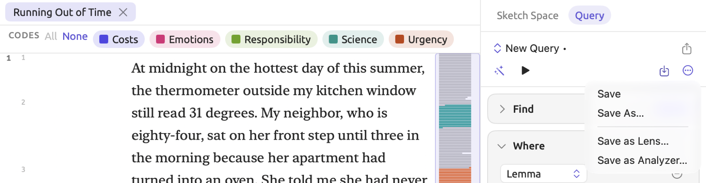
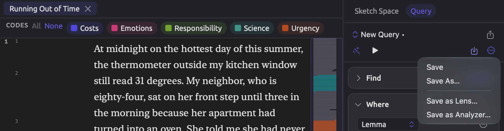
Saving a query as a lens
A lens is essentially what you should be looking for if you want to run your query alongside your reading experience. “Climate Debate” has a query named “Urgency Talk” saved as a lens, and this lens shows annotations on sentences containing any of five specific words (urgent, urgency, crisis, emergency, deadline) if they overlap a passage coded “Urgency” or any of its subcodes. This lens’s query is explained in detail in A first query in Chapter 15, Building a Query, and it locates Sentences through Lemma matching with a context row for Codings. The Show condition is set to List mode.
If you wish to save your query as a lens:
- Run the query and look at a few of its hits. In a document’s Query facet, click a hit to scroll the reader to it. In a Queries view or the Queries window, double-click a hit, or right-click it and choose Go to Source.
- Make sure Show is set to List.
- Open the Save menu and choose Save as Lens….
- In the Save as Lens dialog, enter a Name. The lens menu will show this name.
- In Available In, choose where the lens should be offered (see the table below).
- Click Save.
Once the query is saved, it immediately turns into a lens. In the query name menu or the left column of a Queries view or the Queries window, you will notice that each lens has a pair of glasses next to the query’s name.
For a query that is already saved, Save as Lens… skips the dialog: it saves the query in its current state, including any unsaved changes, and turns it into a lens at once.
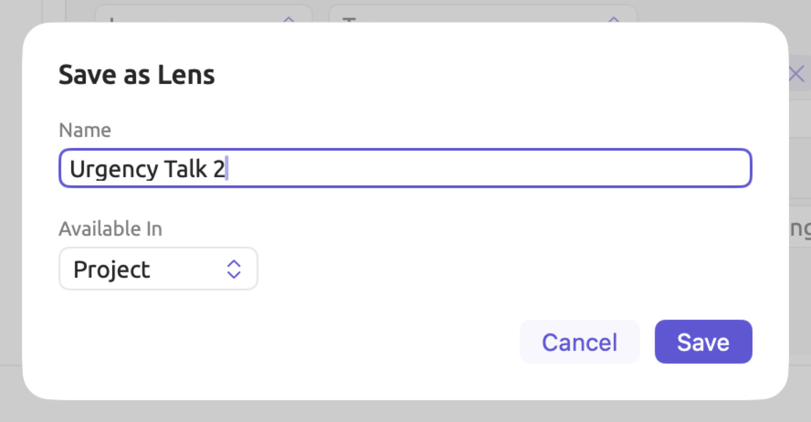
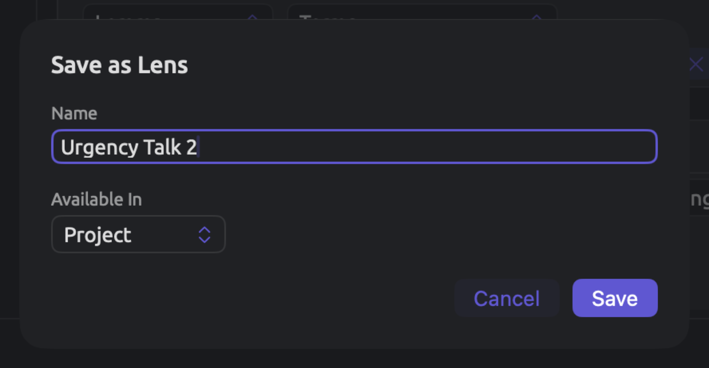
In Available In, the documents that will provide the lens are defined. For Available In, you want to define the smallest scope in which your documents fall; doing so will keep the lens menus of other documents brief. Your dialog will display options according to where you are working; the default option is always the first choice listed.
| Available In | Offered when you save from | The lens appears in |
|---|---|---|
| Document | a document’s Query facet | that document only |
| Set | a set’s Queries view, or the Queries window with a set as the scope | every document in the set, and their translations |
| Project | a document, a set, or the project | every document in the project |
| All Projects | anywhere | every document in every project |
When working in the Queries window with All Projects as the scope, only one option appears, All Projects.
Using a query lens in the reader
Query lenses are enabled similarly to regular lenses:
- Open a document in which the lens is available.
- Click the lens menu in the title band at the top of the reader. Query lenses are listed by name in the lower part of the menu, after Bookmarks, Codes, and your dictionaries.
- Choose the lens. A checkmark shows that it is enabled, and its lenslets appear in the legend.
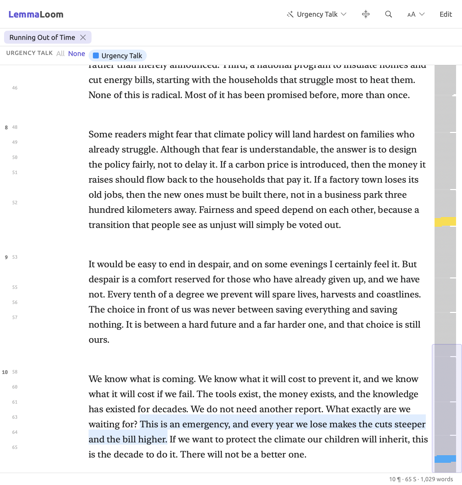
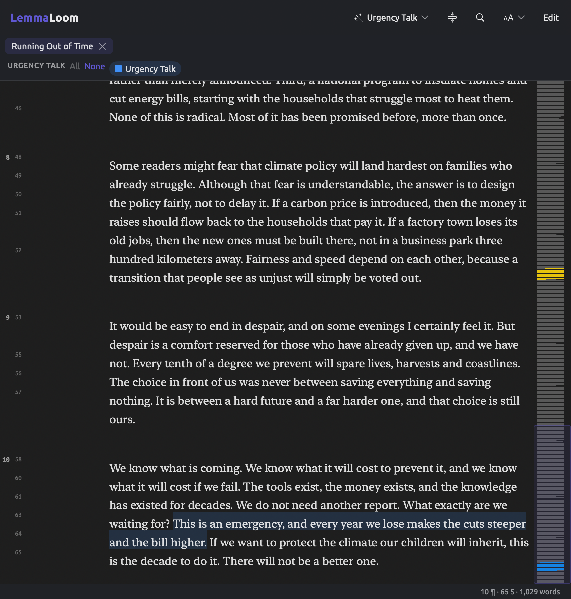
Here are the rules for how a lenslet gets generated from your query:
- A query that has no categories generates a single lenslet. It’s called whatever you named your query.
- A query that has categories generates a lenslet for each category, and colors it and styles it according to your choices in the Categories condition. Annotations are only applied to those hits that fall within a category.
- A query that uses Color By creates a separate category for each unique value of a field (see Categories and Color By in Chapter 15, Building a Query). As many lenslets get created as distinct values occur within the open document; however, they don’t exceed 16 in all. The lenslets get sorted alphabetically, while colors get assigned in that order. Consequently, the same value may receive two different colors in two different documents.
When you enable the lens for the current document, LemmaLoom runs the underlying query. It runs again whenever you modify your query and save it or rename it. Also, whenever codings or bookmarks change within the document, LemmaLoom reruns the query. So, “Urgency Talk” reacts immediately to your coding activity, meaning that the annotation will appear the minute you apply the code “Deadlines” to the sentence beginning A deadline that falls after everyone in office has retired in “Running Out of Time”.
Disabling a lens happens when you toggle it again from the lens menu or choose Clear All, Clear Lenses, or Clear Annotations; Clear Annotations also disables Bookmarks and Codes along with other query and dictionary lenses.
If you decide to cease providing the lens altogether, then load the query you need to remove from the lens menus and go to its Save menu to choose Remove Lens. The query itself remains intact. Deleting the query removes the lens too, though. Edit ▸ Undo Remove Lens and Edit ▸ Undo Delete Query return it.
Once the lens is enabled, you can invoke Document ▸ Auto Code… (⇧⌘A) or the corresponding item near the bottom of the lens menu, which opens the Auto Code dialog, which codes every passage the lens annotates. When multiple query, dictionary, or analyzer lenses are enabled, each menu contains multiple options, each related to its own particular lens, such as Auto Code with Urgency Talk…, and ⇧⌘A goes with the first. For instance, since “Urgency Talk” has no categories, its dialog has one row alone, called “Urgency Talk”. Auto-coding from a lens in Chapter 7, Coding goes into more detail.
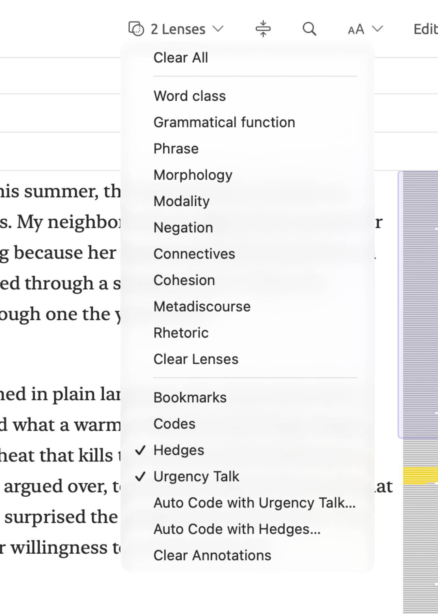
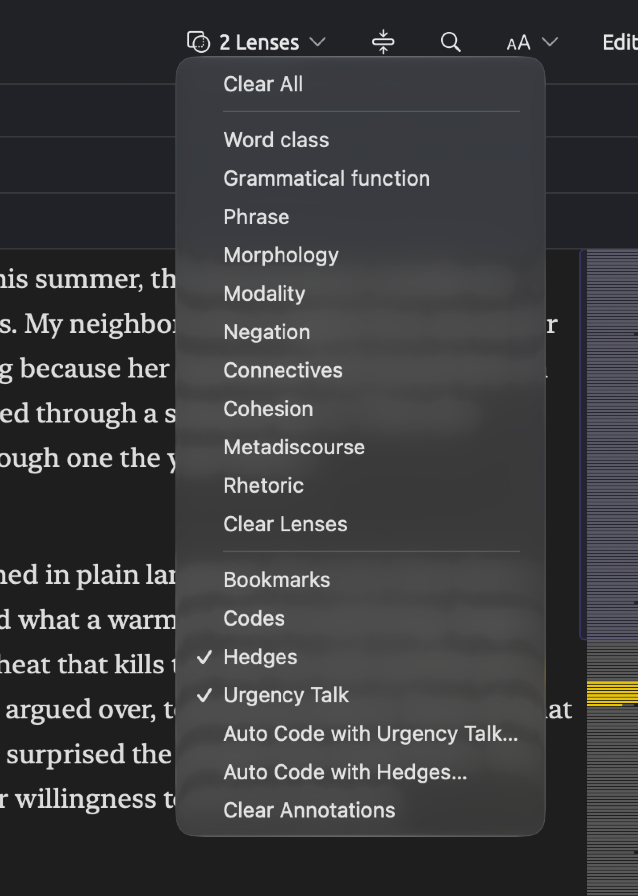
Which queries can be lenses
A lens will annotate stretches of text in the current document only. Your query should thus return a simple list of the passages. The Save as Lens… item is disabled if the query fails to meet that requirement. Hover the mouse pointer over it to find out precisely why. For the purpose of generating lenses, a query must satisfy certain criteria:
- Show should be set to List;
- Find must specify one of these kinds of passages, namely Words, Pattern Matches, Sentences, Paragraphs, Text Matches, Phrases, Noun Chunks, Findings, Codings, Memos, Bookmarks, or Speaker Turns;
- Sorting is performed on any criterion except Score. Score is offered for queries with a frozen list (see Freeze Values later in this chapter);
- No more than 16 categories are defined in the query’s Categories condition;
- And the query itself needs to be ready to execute.
All the conditions for unavailability are detailed in Why an item is unavailable later in the chapter.
Turning a query into an analyzer
Custom analyzers are small JavaScript programs that run for each document when it is being indexed (see Chapter 20, Custom Analyzers). When saving a query as a custom analyzer via Save as Analyzer…, the code needed for this purpose is generated for you, and the resulting custom analyzer functions as follows:
- Runs for every document in the languages you choose, in all projects, except documents where you remove its output in Document Properties (see Chapter 21, Analysis and Indexing);
- Results stored and computed once per document, so not repeated every time you enable a lens;
- Visible among other analyzers in the lens menu, and able to be run with Auto Code…;
- Results searchable through Find set to Findings, and thus available for use in further queries;
- Source visible in Window ▸ Analyzers for viewing, testing, and editing.
“Urgency Talk” cannot be saved as a custom analyzer since it uses Codings in its context, which are unavailable during indexing, so Save as Analyzer… is disabled with the reason Uses codings or memos. However, the examples below show how to generate a custom analyzer from a query. The example query used is “Urgency Words”, saved in the project’s Queries view with Available In set to Project. It finds Words with only a text row set to Lemma for threshold, collapse, unravel, deadline, target, and countdown. Unravel originates from the document titled “Running Out of Time”, wherein ice sheets, forests, and ocean currents begin to unravel on their own. Its Categories condition contains two categories. “Tipping Points” is a category containing a text row set to Lemma for threshold, collapse, and unravel, whereas “Deadlines” is another category that includes a text row for Lemma of deadline, target, and countdown. The names of the categories are identical to those of the two subcodes of “Urgency”, so the Auto Code dialog can match them (see Auto Code… later in this chapter).
Here is how to create an analyzer from a query:
- Save the query first, with Save or Save As… (see the note below).
- Open the Save menu and choose Save as Analyzer….
- Wait while the Parity line shows a spinner, then check the dialog (described below).
- Change Name or Languages if needed.
- Click Save.
The Save as Analyzer dialog contains these fields:
- Name begins as the name of the query.
- Languages includes options for English, German, and Chinese. Initially, the languages of the documents covered by the query will be selected, or English if none are among those three. You should only check the languages intended for the query, as a query for English lemmas, for instance, should be run on English documents.
- Legend displays each category of the query colored appropriately. If there are no categories in the query, then Legend will display a single item labeled Match.
- Source contains the script generated for the query. Select and copy the contents of this field to use elsewhere; however, to edit the script, first save and then use Window ▸ Analyzers.
- Parity shows the outcome of the parity check (see The parity check below).
- Documents displays the number of documents across all your projects in the selected languages. The analyzer will process each document.
Save is disabled when any of the following conditions applies; hover the mouse pointer over Save to learn more:
- Checking parity signifies the parity check is currently running.
- Source has errors denotes the generated script does not satisfy the criteria all analyzers must meet. The content of Parity changes to show the error message.
- Findings don’t match indicates a discrepancy in the findings during the parity check.
- Name is empty or No language chosen specifies a field needs filling in.
If the query cannot be represented as a script, the reason will be displayed, and the Save button shows it too.
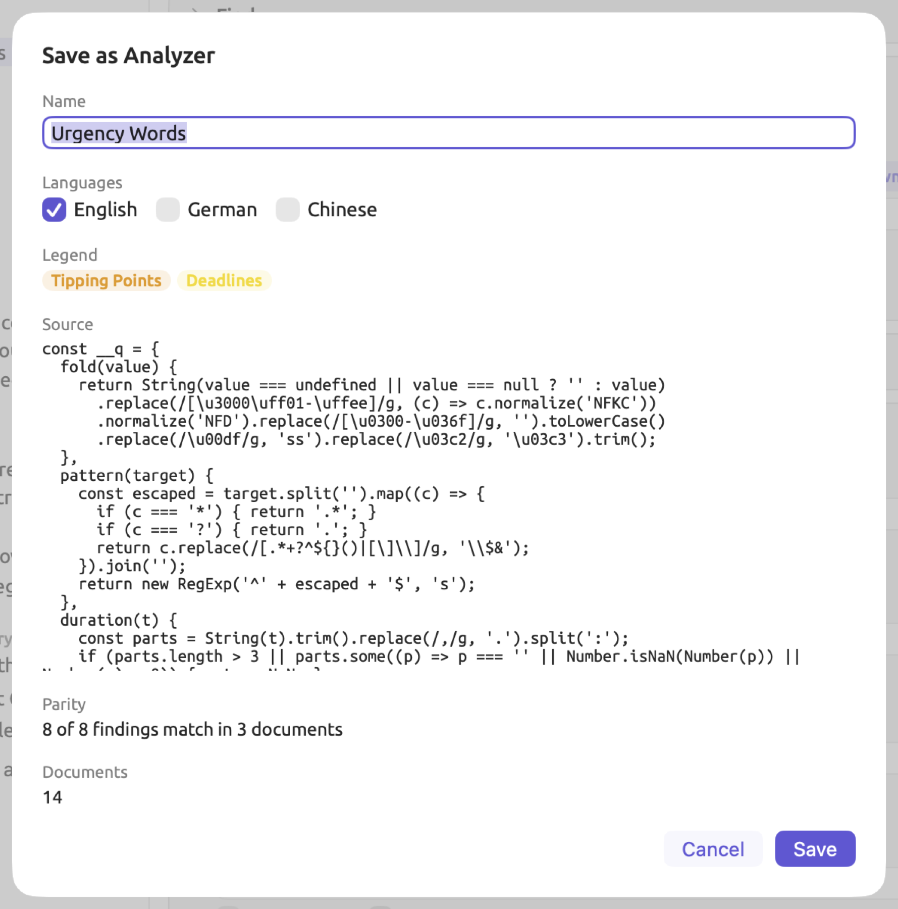
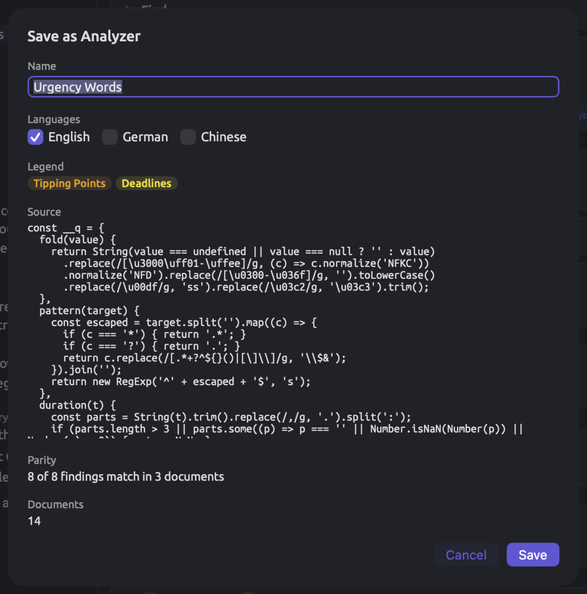
Clicking Save makes the analyzer available in Window ▸ Analyzers, and LemmaLoom then runs it on the documents in its languages behind the scenes in all projects. See Window ▸ Activity (⌥⌘0) to watch the progress. This may take varying amounts of time depending upon the number of documents and capabilities of your Mac. Edit ▸ Undo Add Analyzer undoes this operation.
The parity check
The generated script discovers passages automatically and independently of your query. But before it can be saved, LemmaLoom ensures that it actually identifies the exact same stretches as your query does. The validation procedure takes no more than three indexed documents within your query’s scope and executes both the query and the script on those documents. The stretches discovered by each are compared. Stretches match if they coincide precisely in their beginning and ending word within the same sentence, as well as in their category.
For “Urgency Words”, the line under Parity reads 8 of 8 findings match in 3 documents. The figure 8 of 8 indicates that the script and the query match perfectly; that is, all findings identified by either coincide. The left-hand side number represents the findings discovered in common, while the right-hand side number represents the total number of findings discovered by the query and/or script. Should these two numbers differ, then they indicate mismatches; that is, there are discrepancies in the identification of stretches.
Suppose, to take invented numbers, that the query finds 9 stretches and the script finds 10 stretches in the three documents. Then, since the script includes 8 out of these 9 stretches, it fails to discover one, while finding 2 additional stretches that the query did not. Altogether, the query and the script discover 8 stretches in common. Adding the two totals counts these shared stretches twice, so the stretches found by either are:
Here , , and stand for, respectively, the number of findings discovered by the query, script, and both, and stands for the total number of findings discovered by either. In the example, substituting the numbers into this equation gives , and the line reads 8 of 11 findings match in 3 documents. The script misses one stretch, while discovering 2 new ones; thus, there are 3 mismatches overall.
A mismatch prevents you from saving your script. Save is disabled, and LemmaLoom informs you that Findings don’t match; therefore, retain your query as a lens.
This verification procedure uses the scope defined by your query. For instance, in the Query facet of an open document, it is the current open document only. Otherwise, in the Queries view for a set or a project, it is the first three indexed documents in a set/project scope. To validate your script in relation to more than one document, use a Queries view or the Queries window for creating the analyzer.
In the absence of indexed documents in your query’s scope, LemmaLoom displays a No indexed documents message instead of numbers, and Save is available. As soon as documents become indexed in the scope, enable the analyzer in the respective document’s lens menu, and verify whether the analyzer highlights exactly the same passages as your query does.
Which queries can become analyzers
Like every custom analyzer, a generated one reads through one sentence at a time, considering the sentence’s words, phrases, and noun chunks along with each word’s lemma, word class, grammatical tag, morphology, and dependencies (see Chapter 21, Analysis and Indexing). A query can only turn into an analyzer if these capabilities alone suffice to run it. Otherwise, Save as Analyzer… becomes disabled with an explanation tooltip on hover.
To be suitable as an analyzer, the query should satisfy:
- being qualified as a lens (see Which queries can be lenses earlier in this chapter);
- finding Words, Pattern Matches, Sentences, Phrases, or Noun Chunks;
- using only fields of words, sentences, and phrases in the rules;
- matching text based on Word, Word Form, or Lemma, and Terms or Dictionary;
- making connections only inside a single sentence via Overlapping, Inside, Containing, Same Span As, or In the Same Sentence As relations only to words, sentences, phrases, or noun chunks;
- without any Has rows or any Color By option enabled;
- excluding references to the fields Negator, In Negation Scope, Connective, Modality, Topological Field, and Particle. They are reserved for the reader’s built-in lenses.
The query “Urgency Words” fits these requirements. This query searches for words and checks only their lemmas both within rules and category definitions.
Keeping an analyzer in step with its query
Once the query is modified and saved after creating the analyzer, the analyzer continues analyzing according to its original query until updated. Should the analyzer be linked (made from a saved query, with a source not altered manually since), LemmaLoom recognizes the discrepancy.
Any modifications made to the saved query of a linked analyzer will mark the analyzer’s entry in Window ▸ Analyzers with Out of Date. Modifying the saved query to alter how results are sorted without modifying results counts too.
Updating the analyzer via the Analyzers window involves:
- Choose Window ▸ Analyzers.
- In the list on the left, select the analyzer that shows Out of Date.
- Click Update Analyzer, to the left of Save in the row with the name and the languages.
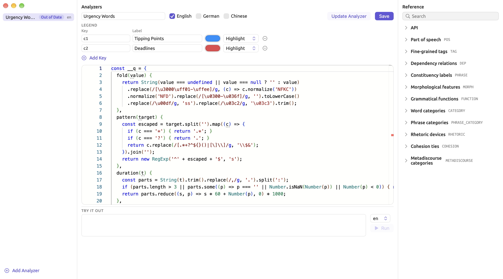
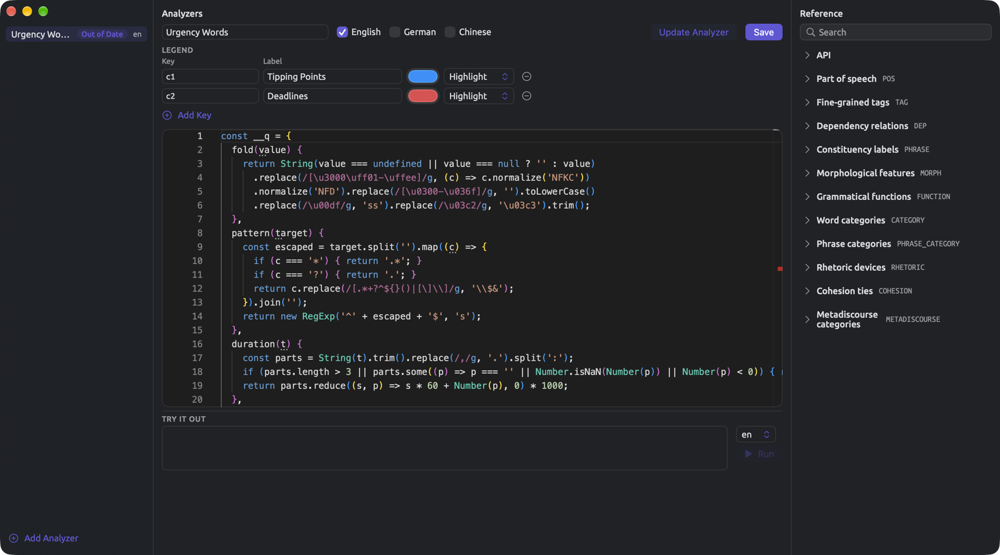
Updating an analyzer via Update Analyzer takes the saved query and converts it directly to an analyzer script. While keeping the name and languages of the analyzer, this will replace its source and legend; therefore, you lose any changes made to label names or colors. If there are errors in the new script, LemmaLoom informs you right below the editor, leaving the analyzer with its old script.
The button is disabled, with an explanation as to why, when the saved query can no longer become an analyzer. When an update changes the analyzer script, LemmaLoom runs the analyzer again for all the documents in its languages. To undo the latest update, select Edit ▸ Undo Update Analyzer.
If you wish to update from the query, which runs the parity check first, open the saved query and then select Save as Analyzer… again. If the analyzer is linked, the dialog is titled Update Analyzer and shows the existing name and language(s), both of which can be edited. You can update the changes via Update, which takes the place of Save, and Edit ▸ Undo Edit Analyzer returns you to the state prior to editing.
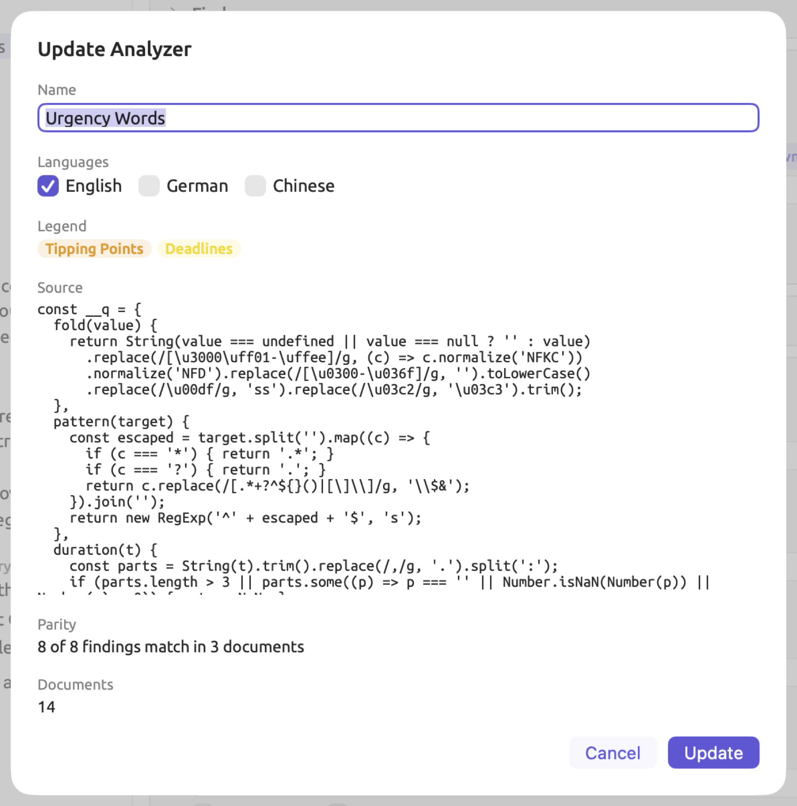
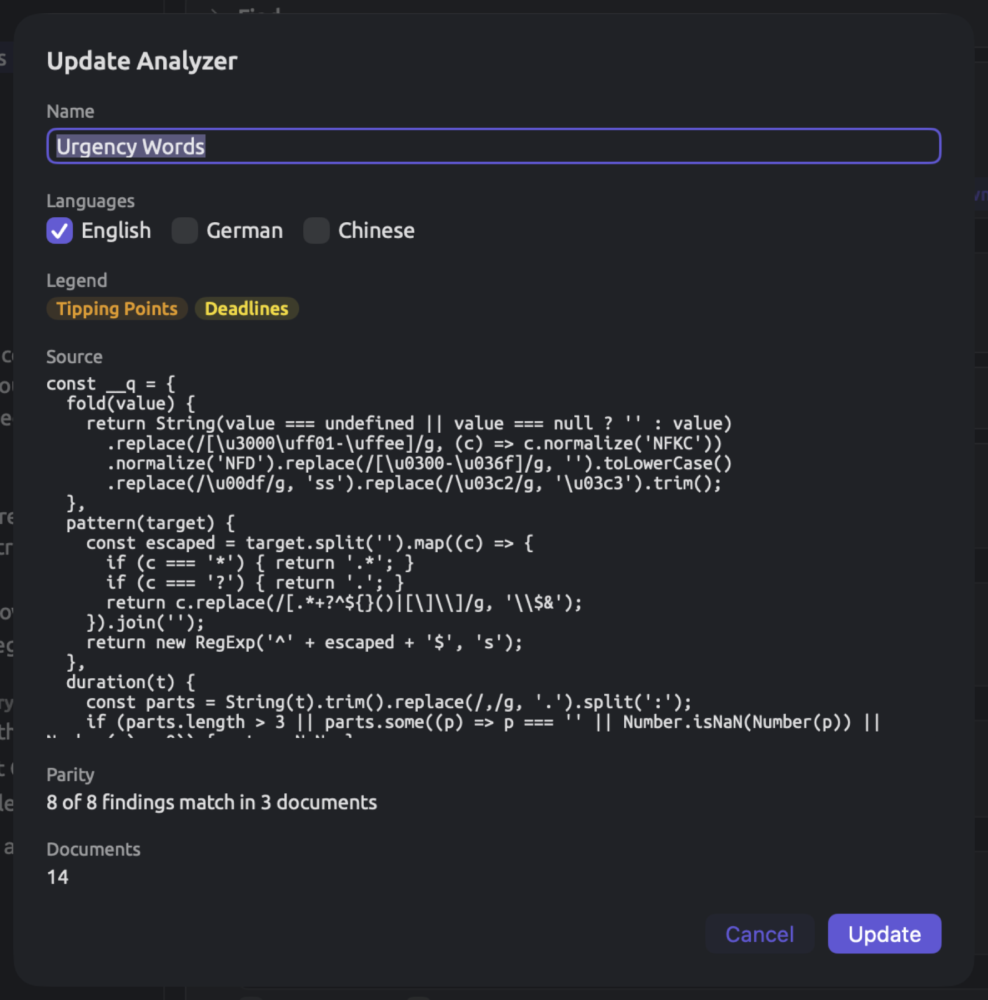
Two conditions will break the connection between the saved query and the analyzer:
- Changing the source via Window ▸ Analyzers, and then clicking Save. This results in an independent analyzer script separate from the saved query, and Save as Analyzer… on the query creates a new, separate analyzer. Edit ▸ Undo Edit Analyzer will restore both the old source and the link. Editing just the name or languages or legend retains the connection.
- Deleting the query. The analyzer keeps working as an unlinked analyzer.
Saving a document query as a smart set
A smart set gathers documents based on property and attribute conditions, determining its membership based on those conditions whenever it needs to (see Chapter 8, Sets, Groups, Tags, and Attributes). If you already have a query which selects documents via property and attribute rules, then that query can be turned into a smart set.
In the “Climate Debate” project, a saved query named “Widely Read Activists” in the project’s Queries view returns Documents. Its Where condition matches All of the two rules, “Stance” is any of “Activist” and “Readership” is at least 100,000 (see Adding a rule in Chapter 15, Building a Query). This results in “Letter from the Climate Strike” and “Running Out of Time”.
Saving a query as a smart set requires:
- Build the query in the Queries view of a set or the project, or in the Queries window with a project or set as the scope.
- Run the query and check the documents it lists.
- Give the query the name you want for the set, with Save As… or Rename….
- Open the Actions menu and choose Save as Smart Set.
A smart set draws on all of the documents in the project regardless of which set the query ran on. Consider a query in the “Activists” set with the single rule “Readership” is at least 100,000. It returns “Letter from the Climate Strike” and “Running Out of Time”; however, a smart set based off of it also includes “Net Zero Will Cost You”, “Let’s Not Panic”, “Carbon Tax Debate”, and “Radio Debate”. The “Stance” rule can be added to limit results to activists.
A smart set can be seen in the sidebar under the name of the query, and its conditions along with the All/Any choice are duplicated too. If the query was never named, the set is titled New Query, or after the recipe used to generate it. You can rename a smart set directly from the sidebar. If changes are needed, select Edit from its shortcut menu, or Project ▸ Edit Smart Set. Choose Edit ▸ Undo New Smart Set to delete the set.
The option Save as Smart Set is only shown in the query’s Actions menu when the following requirements apply to its query definition:
- The Show mode is List, and the Find parameter is Documents.
- Scope is either a project, or a set.
- Rules in the Where condition are not nested in any manner; furthermore, no relations, Has rows, or text rows appear in it.
- All rules refer to document properties, attributes, Tags, Group, Language, or Format.
- No frozen list appears in a rule.
The item becomes disabled when the Where condition is set to match None of its rules, whereas smart sets require matching All/Any of the conditions instead.
The Actions menu
The Actions menu operates upon the result of the query that was just performed. Items are shown depending on the nature of the result; an applicable item that doesn’t have anything to operate on, such as Bookmark Hits… on an empty result list, is disabled. In a Queries view, if none of the items apply, then the entire Actions menu button itself is disabled, indicating No results before the query has run and No actions after. For the Query facet of a document, the menu always contains Auto Code…, while in the Queries window, it’s New Window.
Each item operates upon the entire result, regardless of whether or not it was filtered by the Filter field located above the results (see Filtering the results in Chapter 16, Query Results and Statistics).
| Item | Offered when | What it does |
|---|---|---|
| Auto Code… | the query is in a document’s Query facet | codes the passages the query finds |
| Create Set from Hits | Show is List and Find is a kind of passage or Documents; the scope is not All Projects | makes a set of the documents with hits |
| Save as Smart Set | see Saving a document query as a smart set | makes a smart set from the query’s rules |
| Bookmark Hits… | Show is List and Find is a kind of passage; the scope is not All Projects | bookmarks every listed hit |
| Freeze Values | Show is Collocates or Keywords | replaces the query with one that searches for the listed words |
| Add to Dictionary | Show is Count or Compare with one Group By key, Collocates, or Keywords; Find is Words or Text Matches; the scope belongs to a project that has a dictionary | adds the listed words to a dictionary category |
| New Window | the query is in the Queries window | opens another Queries window with a new query in the same scope (see The Queries window in Chapter 15, Building a Query) |
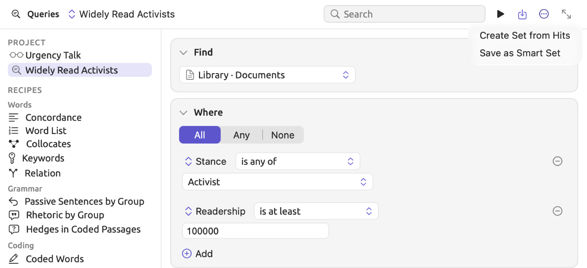
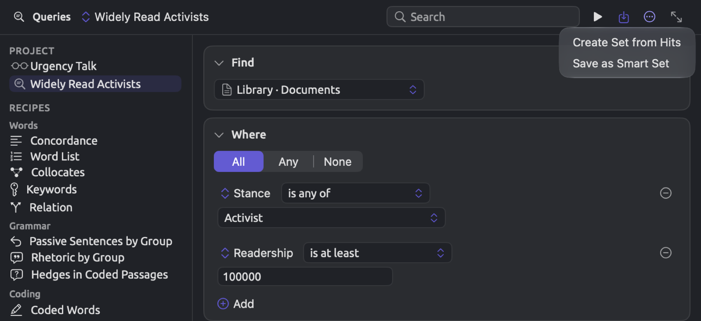
Auto Code…
Auto Code… auto-codes any passage found by the query, directly from the query. This feature may be useful for coding patterns once, within documents or across a set, without having to see them while reading. It is only available from the Actions menu of a document’s Query facet since it relies on the open document’s Auto Code dialog.
With “Urgency Words” selected in the Query facet of the “Running Out of Time” document, with the “Activists” set selected under Documents, running this dialog codes any occurrences of the specified words in the five documents within that set that use them; however, “Hope Takes Work” does not contain any such occurrences. Because the two rows in the Auto Code dialog, namely “Tipping Points” and “Deadlines”, specify existing codes’ names, those codes are selected for coding.
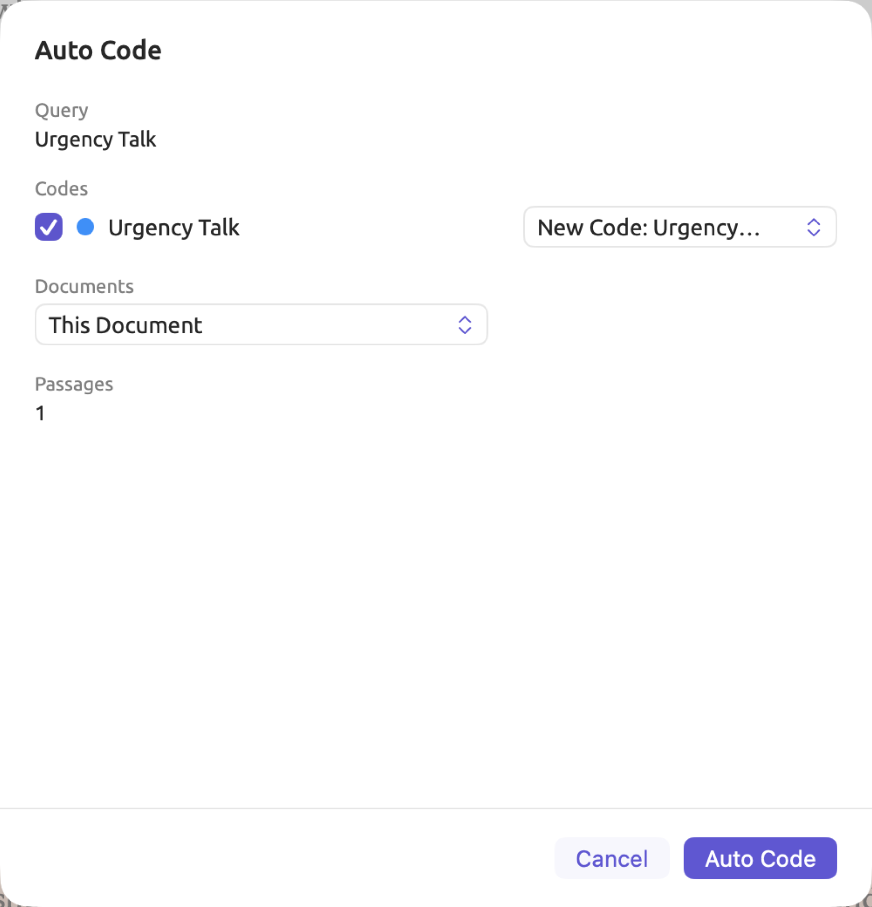
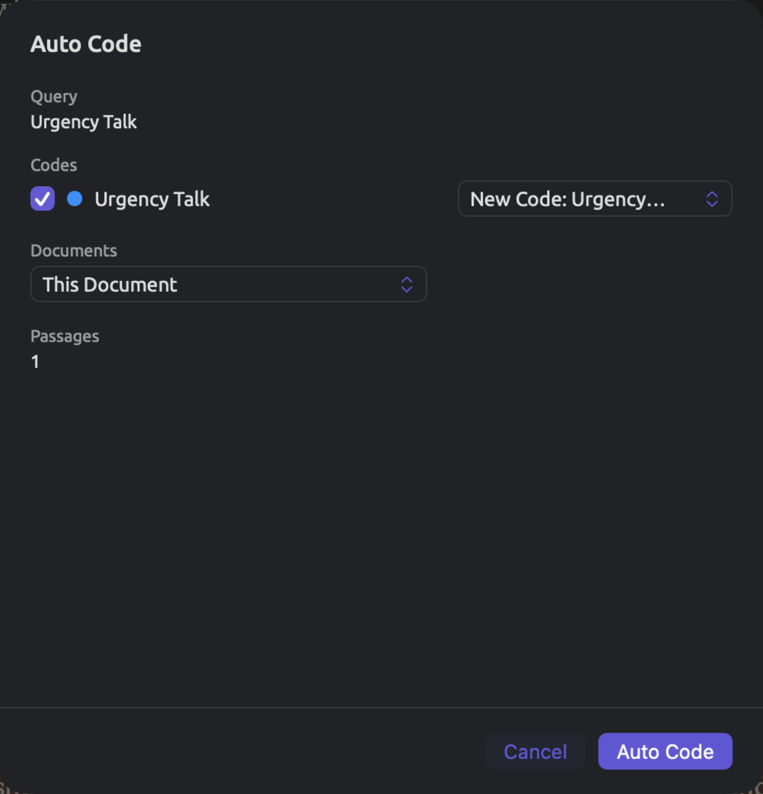
Here is how you run Auto Code… from a query:
- In the document’s inspector, open the Query facet (View ▸ Inspector ▸ Multimode, then Query).
- Build the query, or load a saved one from the query name menu.
- Open the Actions menu and choose Auto Code….
- In the Auto Code dialog, the Query line shows the query’s name. Under Codes, each category of the query has a row; a query without categories has a single row named after the query. Uncheck the rows you do not want.
- For each checked row, choose a code, or keep New Code: … to create a top-level code with the row’s name and color. That code is created only if the run finds a passage for the row. A code whose name matches the row’s name, ignoring capitalization and accents, is chosen for you.
- In Documents, choose This Document, one of the project’s sets, or Whole Project. With This Document, Passages shows how many passages the query finds for the checked rows.
- Click Auto Code. While it runs, Progress shows how many documents are done; Stop ends the run after the current document.
- When Progress shows the number of codings added, click Done.
The Auto Code button becomes disabled when the dialog is loading passages (i.e., Loading) and when no rows are selected (Nothing selected).
If you launch Auto Code based on a query:
- LemmaLoom considers the query as it currently is built whether it has been saved beforehand or not.
- On a set or project-wide basis, the query is executed on every original document in isolation as though you opened each one up and ran the query within each. No translations participate except the active document itself, if applicable; starting on “Running Out of Time (German)” means using it in place of “Running Out of Time”. Similar to manual codings, each coding generated is inserted into each document’s translations too.
- Auto Code… is disabled for the reasons that apply to Save as Lens… (see Which queries can be lenses above for more details).
- The operation is undone as a single transaction using Edit ▸ Undo Auto Code (⌘Z), which eliminates every coding generated and code created during the process; any coding generated prior to clicking the Stop button is eliminated too.
The rest of the behavior with regard to auto-coding is explained in What auto-coding does in Chapter 7, Coding.
Create Set from Hits
Create Set from Hits creates a standard set consisting of all documents with hits in response to the current query. It assigns the query name to the set and creates it immediately in the sidebar.
Consider a query in the Queries view of “Climate Debate” that searches for Sentences where the Lemma is equal to settle, saved as “Settle Mentions”. The resulting hits occur in the three documents, namely “Running Out of Time”, “Hope Takes Work”, and “Let’s Not Panic”. Thus, using Actions ▸ Create Set from Hits results in the creation of the “Settle Mentions” set, which consists of precisely these three documents. Although the lemma settle occurs in “Science Is Never Settled”, it does so in its title only, not the body.
All hits contribute to the set regardless of whether they are excluded from the list by either Limit (see Bookmark Hits below). As the set contains the originals, when the hit falls in a translation, the original document will join the set rather than the translation itself; a hit in “Running Out of Time (German)” adds “Running Out of Time”. For a query that finds Documents, the set would contain the listed documents alone. The set is a static list of documents. Edit ▸ Undo New Set deletes the set.
Bookmark Hits
Bookmark Hits… puts bookmarks on all hits in the list so that you may locate the passages another time, for example with the Bookmarks lens.
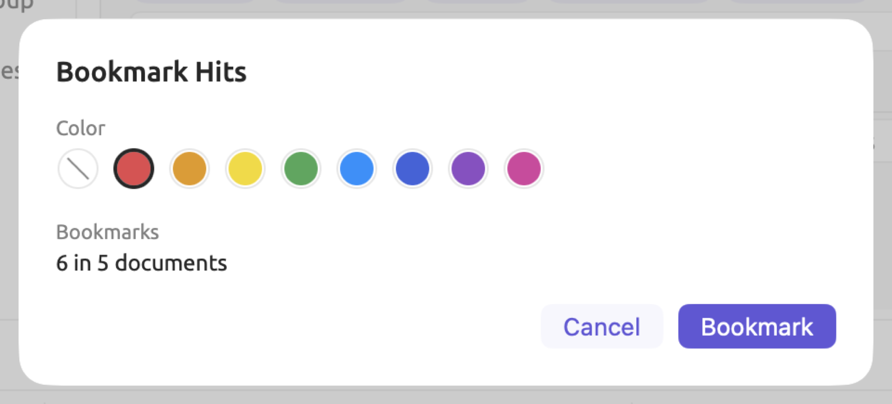
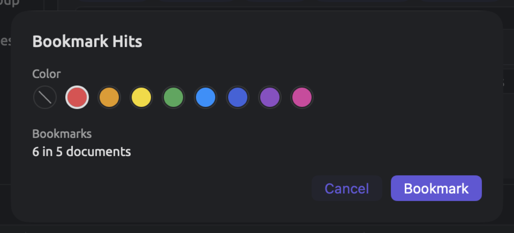
To bookmark hits of a query:
- Run the query with Show set to List.
- Open the Actions menu and choose Bookmark Hits….
- In the Bookmark Hits dialog, choose a Color.
- Check the Bookmarks line, for example 42 in 9 documents. It counts the new bookmarks, leaving out hits that are already bookmarked.
- Click Bookmark.
A bookmark receives the query’s name as its comment.
- Only those hits that appear in the list are bookmarked. This is capped at the Limit parameter on the Options condition (5,000 hits unless specified otherwise) or sooner when Limit is selected on the Show condition. If the line below the list says something like Showing 5,000 of 6,212, increase the limit or deselect Limit on the Show condition before bookmarking.
- Should a hit match the starting and ending point of another bookmark (regardless of color), it is skipped. When all hits are matched, Bookmark becomes disabled with the reason Already bookmarked.
- Like manually created bookmarks, bookmarks created via this query automatically appear in other language versions of the same document.
- One Edit ▸ Undo Bookmark Hits clears all newly added bookmarks.
Freeze Values
A Collocates or Keywords query yields results specific to the documents it was performed on. With Freeze Values, however, a fixed list of words may be generated based off of your result, allowing you to search for those words wherever needed. An example of a common application might involve finding the words that distinguish two separate sets of documents from each other, followed by searching the second set with those words.
For example, the set “Activists” in “Climate Debate” contains a saved query called “Keywords: Activists”. This query provides the keywords found more frequently in activist texts compared to the skeptics’. After freezing this list and saving a new query with it in the project, you could load this new query onto the “Skeptics” set to discover with a Count grouped by Lemma which of the activists’ keywords the skeptics use, and how often.
Upon selecting Actions ▸ Freeze Values:
- The first 200 rows of your result will be converted into a frozen list. The frozen list is named for the initial query. When dealing with Keywords queries, only the Positive Keywords are used, namely, the words the set uses more often than its reference. The scores of each row in the result become weights for each of your words.
- Your builder is changed into a new, unsaved query which searches for Words whose Lemma is any of the frozen list, or whose Word or Word Class is, depending on what your previous query was counting.
- This new query inherits the name of the frozen query. While it has the same name as before, it actually is an entirely separate entity. Save requires a name.
- Edit ▸ Undo Freeze Values restores the old query, with any unsaved changes.
- Editing any words in the new rule converts it to an ordinary list without weights.
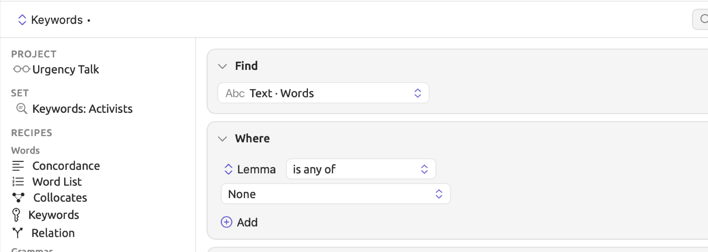

In a Queries view or the Queries window, you can display both lists side by side while working on the frozen list. Do so by clicking Open results in a window at the right of the results bar, prior to freezing. (See Results in a window in Chapter 16, Query Results and Statistics.)
To find the words of the frozen list somewhere else:
- Run the Collocates or Keywords query, and check its list.
- Open the Actions menu and choose Freeze Values. The builder now holds a query that finds the listed words.
- Open the Save menu, choose Save As…, and give the query a name. Set Available In to a place that includes the documents you want to search; to load the query in another set, choose Project.
- Open the Queries view where you want to search, and load the query from the query name menu or the left column.
- Set Show to what you want to see, such as Count with a Group By key on Lemma, which lists how often each frozen word occurs.
A Count within the “Skeptics” set produces raw counts. As the skeptics’ texts diverge from the activists’ texts in quantity and length, a rate should account for this divergence. Thus, for a rate that can be compared with results from the same query conducted on the “Activists” set, select Per 10,000 Words within the menu showing Hits (see Measures in Chapter 16, Query Results and Statistics).
The query with the frozen list can sort its results according to Score, ranking passages in accordance with the weight of the words within the frozen list (see Passages Like a Code in Chapter 17, Query Patterns and Discovery). However, lenses need a sort order other than Score.
Add to Dictionary
Add to Dictionary will append the words of a result to a category of one of your project dictionaries. Use it after having generated either a frequency list, collocates list, or keywords list, containing the desired words that should be appended to that particular category.
Within “Climate Debate”, the “Approximators” category of the “Hedges” dictionary contains words that approximate amounts or numbers, namely about, around, roughly, approximately, almost, nearly, more or less, and just about. There are additional words, like often, usually, and mostly, which similarly hedge a statement without necessarily modifying amounts or numbers. In certain studies, often, usually, and mostly may even fall into the category of approximators.
A query in the project’s Queries view reveals which of those words were found in the documents. It searches Words whose Lemma equals about, around, roughly, often, usually, mostly, and occasionally, with Show set to Count and one Group By key, which is Lemma again. Six results appeared, namely about 26 times, roughly 7 times, around 5 times, usually 5 times, mostly 3 times, and often 3 times. Using Actions ▸ Add to Dictionary ▸ “Hedges” ▸ “Approximators”, the three words, mostly, often, and usually, got appended, whereas the other three were already inside the category.
The occurrence count of about also counted the phrase the thing about panic in the document “Let’s Not Panic”, as well as a market town of about nine thousand people in the document “Who Pays for the Transition”. Remember, occurrences don’t tell much about usage, so browse some results before adding words to categories.
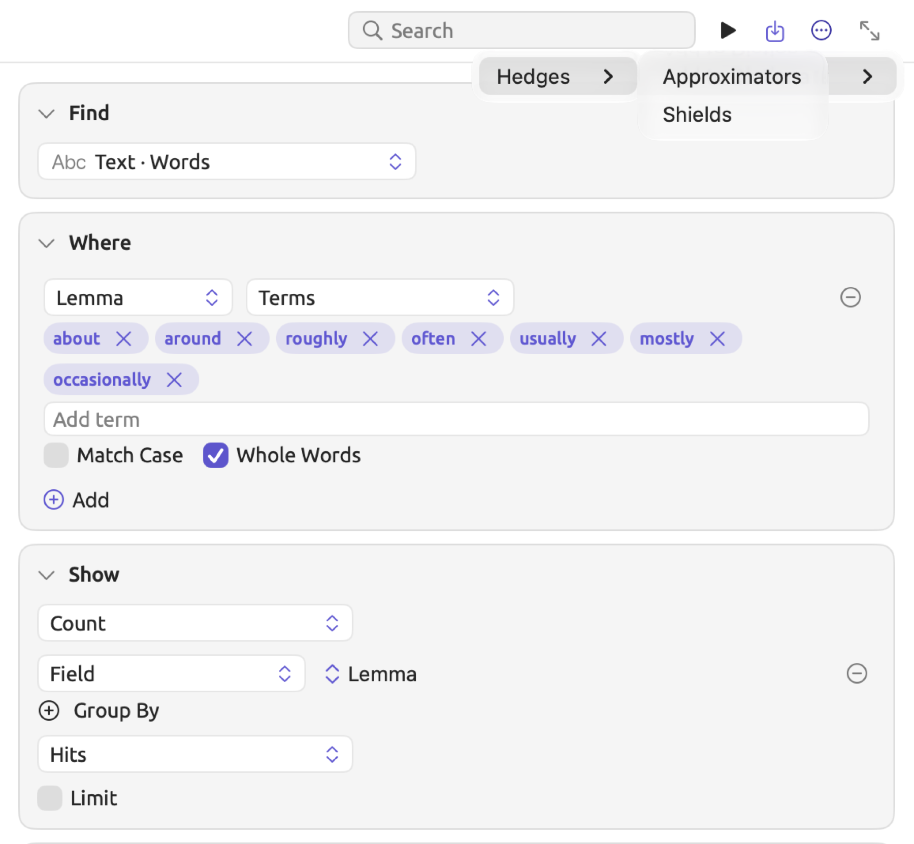
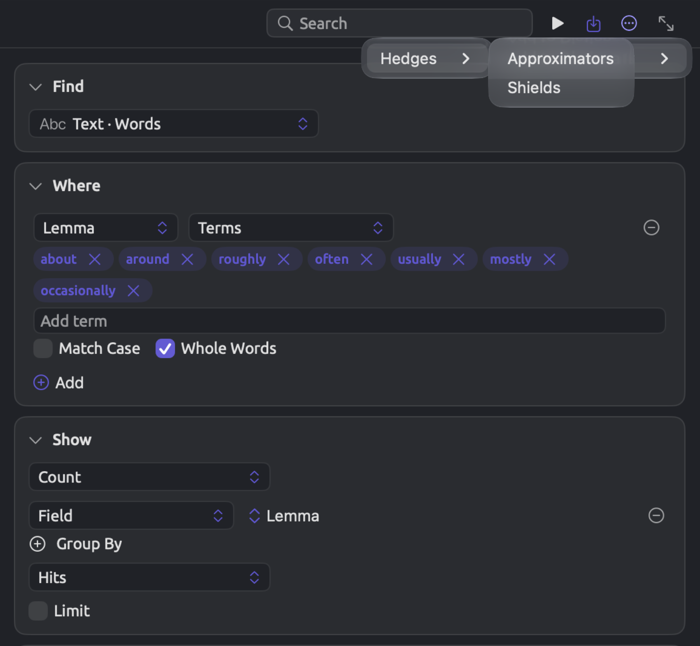
To add the words of a result to a dictionary:
- Run the query.
- Open the Actions menu and choose Add to Dictionary.
- In the submenu, choose the dictionary, then the category.
Terms are included instantly upon selecting the category.
- Terms from the label of each row are included, up to the first 200 rows. For Keywords, only Positive Keywords are included. If you wish to include less than all rows from a Count, check Limit in the Show condition and select a value first.
- If a term already exists in the category, then it won’t be included; term comparison is case insensitive. The category itself maintains alphabetical order.
- Only the dictionaries of the query’s project are listed. The item is hidden if there aren’t any dictionaries in the project (see Creating a dictionary in Chapter 19, Dictionaries).
- Edit ▸ Undo Add to Dictionary removes all the added terms in one step.
If you only want to include a couple terms, or even terms that weren’t included in your results, copy-paste those terms into the Add term field of the category in the project’s Dictionaries view. Each term should be placed on its own line (see Adding and removing terms in Chapter 19, Dictionaries).
Why an item is unavailable
A disabled Save as Lens…, Save as Analyzer…, or Auto Code… reveals the cause upon hover. Only one cause will be revealed at once regardless of multiple causes being true; after you have resolved it, the next may reveal itself. The first six causes listed in the table prevent all three actions while the remaining prevent only Save as Analyzer….
| Reason | What it means | What to change |
|---|---|---|
| Not a list | Show is not set to List. | Set Show to List. |
| Not passages | Find is set to documents, codes, sets, or another library item, which have no place in the text. | Find a kind of passage instead. |
| Paired results | Find is Links or Alignments; each hit joins two places. | Find a kind of passage that lies in one place. |
| Scored list | The list is sorted by Score. | Choose another sort order. |
| More than 16 categories | The Categories condition has more than 16 categories. | Merge or remove categories. |
| Incomplete | A rule is unfinished, or something else stops the query from running. | Complete the query; the results area names what stops it. |
| Uses analyzer findings | Find is Findings, or a rule refers to findings. | Keep the query as a lens. |
| Uses raw text | Find is Text Matches or Paragraphs; a text row matches Text or uses a Regular Expression; or a rule tests the paragraph or the passage’s Text or Length. | Match by Word, Word Form, or Lemma with Terms or a Dictionary. |
| Uses media | Find is Speaker Turns, or a rule uses In the Same Turn As. | Keep the query as a lens. |
| Uses translations | A rule uses Translated As. | Keep the query as a lens. |
| Uses codings or memos | Find is Codings, Memos, or Bookmarks; a rule tests a coding, memo, bookmark, or link, or uses Linked To; a relation points to anything other than words, sentences, phrases, noun chunks, or findings; or the query has a Has row. | Keep the query as a lens. |
| Uses document fields | A rule tests a property or attribute of the document, such as Title, Language, or the attribute “Stance”. | Remove the rule, or limit the query with its scope instead. |
| Uses Color By | The Categories condition uses Color By. | Define the categories with rules instead. |
| Uses reader-only fields | A rule uses Negator, In Negation Scope, Connective, Modality, Topological Field, or Particle. | Keep the query as a lens. |
| Crosses sentences | A rule uses Near, Before, After, or In the Same Paragraph As. | Use In the Same Sentence As, or keep the query as a lens. |
One more reason, Not word-level, applies solely within the context of the Save as Analyzer dialog. This reason implies that while the query passes the checks above, parts of the query cannot be translated into a script. Keep the query as a lens.
Queries in LemmaLoom archives
The archive file format of LemmaLoom (.llz) stores your saved queries along with the indexed documents and their associated codes (see Chapter 22, Exchanging and Exporting). The queries included depend on your exports:
| Export | Queries included |
|---|---|
| File ▸ Export ▸ LemmaLoom Project | every query saved for the project, for any of its sets, or for any of its documents |
| File ▸ Export ▸ LemmaLoom Set, or Export in a set’s shortcut menu | queries saved for the project, for that set, and for the documents in it |
| File ▸ Export ▸ LemmaLoom Document (LemmaLoom Documents for several), or Export in the shortcut menu of selected documents | queries saved for the project and for those documents |
Queries that were saved for All Projects are excluded from an archive. The fact that a query acts as a lens remains intact upon import.
An archive contains any analyzer whose findings are stored with your exported documents. Additionally, it will include any analyzer that an included query searches with Findings, and any analyzer derived from the queries themselves. Findings are always imported alongside their related document.
Upon importing an archive via File ▸ Import ▸ LemmaLoom Archive, the following transformations happen:
- Any codes, sets, or other items referenced in queries are paired up with their imported counterparts.
- A query of a set or document not found in your archive becomes a project-level query.
- Analyzers sit outside of any particular project. When importing an analyzer that you already have, e.g., if you exported the archive yourself, LemmaLoom uses your copy of it with any changes you made since, and skips the archive’s copy. Otherwise the analyzer is imported, and one derived from an imported query will stay linked to it. Should the query reference words from a dictionary, the analyzer appears Out of Date because the query references a different copy of the dictionary now or no dictionary at all.
- References pointing to items that don’t belong to the archive are discarded. Since dictionaries, other sets, and code sets only travel in a project archive and never in a set or a document archive, queries from those archives may require selecting a dictionary or a set separately again.